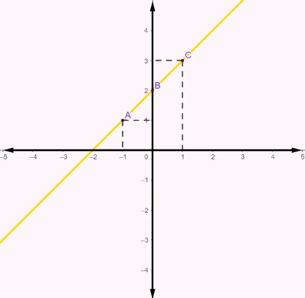
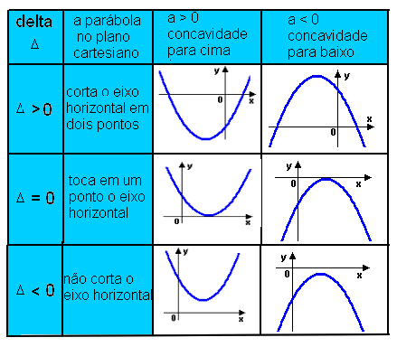
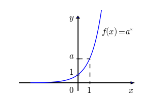
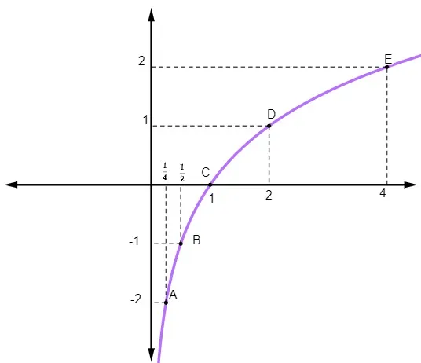

Função Afim
A função afim, ou função polinomial do 1º grau, é definida pela lei de formação f(x) = ax + b, onde a (coeficiente angular) e b (coeficiente linear) são números reais e diferentes de zero. Seu gráfico é sempre uma reta, que pode ser crescente (a > 0) ou decrescente (a < 0).
| x | 2x +3 | f(x) |
| -2 | 2.(-2)+3 | -1 |
| -1 | 2.(-1)+3 | 1 |
| 0 | 2.(0)+3 | 3 |
| 1 | 2.(1)+3 | 5 |
| 2 | 2.(2)+3 | 7 |

Função Quadrática
A função quadrática é uma função polinomial do segundo grau, geralmente escrita na forma f(x) = ax²+bx+c, com a≠0, cujo gráfico é uma parábola. O vértice é o ponto que representa o valor máximo ou mínimo da função e pode ser calculado por xv = −b/2a e yv = -Δ/4a. As raízes são os valores de x que tornam a função igual a zero, podendo ser encontradas pela fórmula de Bhaskara x = (−b ± (b²−4ac))/2a, sendo que o discriminante Δ = b2−4ac determina a quantidade de raízes reais. A concavidade da parábola depende do sinal de a: se a>0, a parábola é voltada para cima (concavidade para cima), e se a<0, é voltada para baixo (concavidade para baixo).

Função Exponencial
A função exponencial é uma função matemática da forma f(x)=ax, em que a base a é um número real positivo e diferente de 1. Seu gráfico é sempre uma curva que passa pelo ponto (0,1) e nunca toca o eixo x, pois seus valores são sempre positivos. Quando a>1, a função é crescente, ou seja, aumenta à medida que x cresce; já quando 0 < a < 1, ela é decrescente. Essa função é muito utilizada para representar fenômenos de crescimento e decaimento, como juros compostos, crescimento populacional e processos de desintegração radioativa.

Função Logarítmica
A função logarítmica é definida na forma f(x) = log de a(x)
A base a é positiva e diferente de 1
Seu domínio é formado apenas por valores positivos de x
Seu gráfico passa pelo ponto (1,0)
Quando a > 1, a função é crescente; já quando 0 > a, ela é decrescente
Além disso, o eixo y(x = 0) funciona como uma assíntota vertical, pois a função não está definida nesse ponto
A função logarítmica é muito utilizada para representar escalas como pH, intensidade sonora e crescimento que ocorre de forma mais lenta
